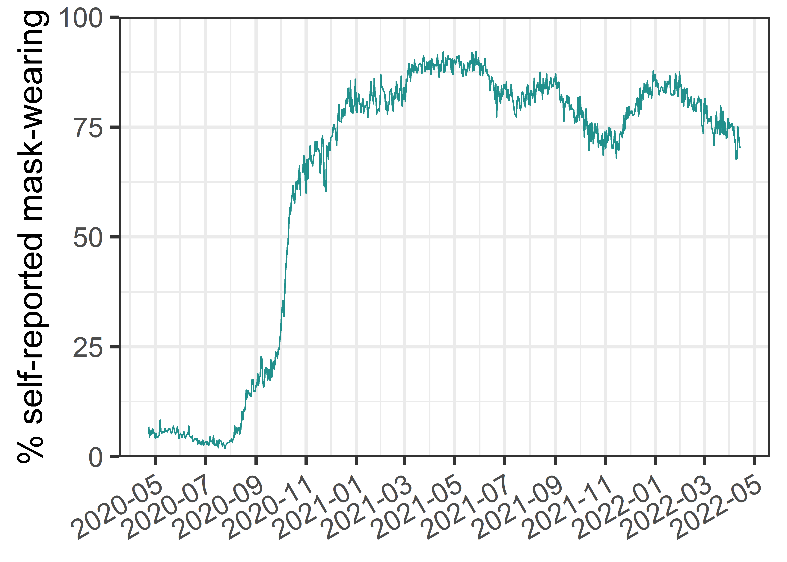

Demonstration of movements through an attractor landscape
Source code for this document is found here.
\(~\)
Dataset description
\(~\)
The dataset used here is provided via The University of Maryland Social Data Science Center Global COVID-19 Trends and Impact Survey, in partnership with Facebook. It contains samples of Facebook users agreeing to statements about the COVID-19 pandemic. We use the data for Finland, and have opted for the data not weighted (by Facebook) to match the population. The differences between weighted and unweighted datasets are not large (especially as smoothing is applied), but the weights might induce distortions: For example, a German person with a moderate sampling weigh in the German context but a high one in the Finnish context, can be reported as currently residing in Finland. Facebook does not have access to survey data, and University of Maryland does not have access to Facebook data; hence, the person would result in the Finnish dataset, but with their German sampling weight.
References detailing the data collection methodology and weighting procedures:
Astley, C. M., Tuli, G., Mc Cord, K. A., Cohn, E. L., Rader, B., Varrelman, T. J., Chiu, S. L., Deng, X., Stewart, K., Farag, T. H., Barkume, K. M., LaRocca, S., Morris, K. A., Kreuter, F., & Brownstein, J. S. (2021). Global monitoring of the impact of the COVID-19 pandemic through online surveys sampled from the Facebook user base. Proceedings of the National Academy of Sciences, 118(51), e2111455118. https://doi.org/10.1073/pnas.2111455118
Barkay, N., Cobb, C., Eilat, R., Galili, T., Haimovich, D., LaRocca, S., Morris, K., & Sarig, T. (2020). Weights and Methodology Brief for the COVID-19 Symptom Survey by University of Maryland and Carnegie Mellon University, in Partnership with Facebook. ArXiv:2009.14675 [Cs]. http://arxiv.org/abs/2009.14675
Fan, J., Li, Y., Stewart, K., Kommareddy, A. R., Garcia, A., O’Brien, J., Bradford, A., Deng, X., Chiu, S., Kreuter, F., Barkay, N., Bilinski, A., Kim, B., Galili, T., Haimovich, D., LaRocca, S., Presser, S., Morris, K., Salomon, J. A., … Vannette, D. (2020). The University of Maryland Social Data Science Center Global COVID-19 Trends and Impact Survey, in partnership with Facebook. The Global COVID-19 Trends and Impact Survey Open Data API. https://covidmap.umd.edu/api.html
In the following code chunk, we download and preprocess the data using R. To see the code, please click the “Code”-button on the right hand side below. For the source code of data_preparation.R, which was used to download the data from CTIS API (and can be repurposed to downloading other countries’ data by changing the value of country_in_question), see here.
knitr::opts_chunk$set(echo = TRUE,
warning = FALSE,
message = FALSE,
error = FALSE,
cache = TRUE,
collapse = TRUE,
eval = TRUE,
dpi = 300)
# devtools::install_github("fredhasselman/casnet")
library(tidyverse)
## Download comprehensive datasets from CTIS API:
# source("data_preparation.R")
country_in_question <- "Finland"
region_in_question <- ""
df_masks_allwaves <- readr::read_csv(
file = paste0("./data/",
country_in_question, region_in_question,
"_CTIS_unweighted_allwaves",
".csv")) %>%
dplyr::select(date, percent_mc_unw)
df_orig <- readr::read_csv(
file = paste0("./data/",
country_in_question, region_in_question,
"_CTIS_unweighted",
".csv"))
figure_identifier <- paste0(country_in_question)
dir.create(paste0("attractor-viz/"))
dir.create(paste0("attractor-viz/", figure_identifier, "/"))
# head(df_orig %>% dplyr::select(date, everything()))
# purrr::map(.x = df_analysis,
# .f = ~sum(is.na(.x)))Data preparation
\(~\)
From the original dataset, we choose eight variables of protective behaviours featuring no missing values. These variables consist of:
- % of respondents who wore a mask all the time or most of the time when in public.
- % of respondents who report intentionally avoiding contact with other people all the time or most of the time.
… As well as six activities performed during the last 24 hours:
- % of respondents who worked outside their home in the past 24 hours.
- % of respondents who spent time with someone who hasn’t stayed with them in the past 24 hours.
- % of respondents who went to a market, grocery store, or pharmacy in the past 24 hours.
- % of respondents who went to a bar, restaurant, or cafe in the past 24 hours.
- % of respondents who used public transport in the past 24 hours.
- % of respondents who attended an event with more than 10 people in the past 24 hours.
The variables concerning the aforementioned six activities are reverse-coded, hence a larger value of each variable indicates a lower risk of transmission.
Each variable is normalised to unit scale by dividing the original values by the maximum value of that variable. This results in a score, which indicates variability in relation to the magnitude of the variable, avoiding the “stretching effect” which happens if one rescales to [0, 1] (i.e. a variable which is mostly constant can end up depicting huge fluctuations if forced to extend within a relatively large range).
In the current analysis, we are not concerned with intra-week fluctuations; hence, we apply a smoothing filter: Each variable is processed with a rolling 7-day average.
df_analysis <- df_orig %>%
# Choose variables with protective behaviours and no missings
dplyr::select(date, matches(c("activity",
"percent_mc",
"pct_avoid_contact"))) %>%
# Reverse code variables such as more means riskier behaviours
dplyr::mutate(across(
contains("activity"),
~ 1 - .))
# # Check that there are no missing values:
# df_analysis %>%
# purrr::map(.x = ., .f = ~ sum(is.na(.x)))
# Rescale and smooth (7-day mean) data
df_analysis_rescaled <- df_analysis %>%
dplyr::mutate(across(where(is.numeric),
~./max(.)))
df_analysis_rescaled_smoothed <- df_analysis_rescaled %>%
dplyr::mutate(across(where(is.numeric),
~slider::slide_dbl(
.x = .,
.f = ~mean(.x),
.before = 6,
.after = 0,
.complete = FALSE)))
# ~scales::rescale(., to = c(0, 1))))Visual inspection of dataset
\(~\)
Next, we inspect the time series to verify that recoding and other preparation steps worked as intended.
df_analysis %>%
tidyr::pivot_longer(cols = -date) %>%
ggplot(aes(x = date,
y = value,
colour = name)) +
geom_line() +
scale_colour_viridis_d(option = "viridis",
end = 0.8) +
scale_x_date(date_labels = "%Y-%m") +
labs(x = "Date",
y = "% reporting activity",
title = "Unsmoothed reverse-coded data") +
theme_bw() +
theme(legend.position = "none") +
facet_wrap(~name)
df_analysis_rescaled %>%
tidyr::pivot_longer(cols = -date) %>%
ggplot(aes(x = date,
y = value,
colour = name)) +
geom_line() +
scale_colour_viridis_d(option = "viridis",
end = 0.8) +
scale_x_date(date_labels = "%Y-%m") +
labs(x = "Date",
y = "% reporting activity",
title = "Reverse-coded data divided by variable's maximum") +
theme_bw() +
theme(legend.position = "none") +
facet_wrap(~name)
df_analysis_rescaled_smoothed %>%
tidyr::pivot_longer(cols = -date) %>%
ggplot(aes(x = date,
y = value,
colour = name)) +
geom_line() +
scale_colour_viridis_d(option = "viridis",
end = 0.8) +
scale_x_date(date_labels = "%Y-%m") +
labs(x = "Date",
y = "% reporting activity",
title = "Smoothed reverse-coded data divided by variable's maximum") +
theme_bw() +
theme(legend.position = "none") +
facet_wrap(~name)
### If you want to display a simple mean of the variables
# df_analysis %>%
# dplyr::mutate(mean_of_original_rev_values = rowMeans(select(., -date),
# na.rm = TRUE)) %>%
# ggplot(aes(x = date,
# y = mean_of_original_rev_values)) +
# geom_line() +
# geom_point() +
# scale_colour_viridis_d(option = "viridis",
# end = 0.8) +
# scale_x_date(date_labels = "%Y-%m") +
# labs(x = "Date",
# y = "% reporting activity",
# title = "Simple mean of variables included in analysis") +
# theme_bw() +
# theme(legend.position = "none")Figure 1 of the manuscript
Code below creates the first figure of the manuscript, depicting nonlinear change. Note that there is a very long dataset of this particular variable, but the survey items used for the main analysis were only added much later (that is, June 2021). Different survey versions can be found here.
masks_for_figure <- df_masks_allwaves %>%
dplyr::mutate(percent_mc_unw = percent_mc_unw * 100) %>%
ggplot(aes(x = date,
y = percent_mc_unw)) +
geom_line(colour = viridis::viridis(n = 3,
direction = -1)[2]) +
scale_x_date(date_labels = "%Y-%m",
breaks = "2 months",
# expand = c(0, 0)
) +
scale_y_continuous(expand = c(0, 0)) +
coord_cartesian(ylim = c(0, 100)) +
labs(
title = NULL,
# ": Phase types across resolutions and time"),
# caption = "Higher values of vertical slices indicate less \"resolution\". Lighter colours indicate better quality.
# Horizontal slices indicate temporal evolution of phases at that resolution.",
x = NULL,
y = "% self-reported mask-wearing") +
theme_bw(base_size = 22) +
theme(axis.text.x = element_text(angle = 30, hjust = 1),
legend.position = "none")
masks_for_figure
ggsave(plot = masks_for_figure,
filename = paste0("attractor-viz/", figure_identifier,
"/", figure_identifier,
"_masks_allwaves", ".png"),
height = 8, width = 16)Perform analysis
\(~\)
Next, we perform the Cumulative Recurrence Network (or Multidimensional Recurrence Quantification) analysis. The method is described in detail in the references below, but we outline the main points here. A step-by-step explanation of analysis with a single radius value is presented in the supplementary website of Heino et al. 2021.
Recall that our data consisted of eight time series. To generate a cumulative recurrence network, these time series are considered to trace a path in an 8-dimensional space, where each value is a coordinate. The gist of recurrence-based analyses is quantifying how the system (approximately) returns to a set of coordinates visited previously. We assume that these frequented areas (“phases”) correspond to attractors of the system. Note that, here, the term “phase” is used to signify an area (valley) in the attractor landscape, and “state” is used to signify the position of the ball in a low-dimensional visualisation of the landscape. When each coordinate value is plotted against every other value (see Figure 2 of Hasselman, 2022), a Euclidean distance can be derived to indicate similarity between the two 8-dimensional coordinates (that is, two sets of 8-variable measures; distance between coordinates at e.g. time 1 and time 3).
The common practice is to choose a value for the radius parameter, which defines a similarity threshold between two points in the 8-dimensional space; distance values above this threshold are considered distant (non-recurring), and those below it are considered close (recurring). As there are no satisfactory rules for choosing the radius parameter in our case, we run the analysis on 40 different radii.
For each analysis, the recurrence matrix is considered an adjacency matrix of a complex network (i.e. recurrences are the edges, and time points are the nodes). The edges are weighted by their similarity under the threshold value, so that more similar time points are connected by a stronger edge. We set the upper triangle of the adjacency matrix to zero, in order to not use information from the future to determine whether two nodes are connected, leading to a directed recurrence network. This also allows for the method to be used in real time monitoring of a system, without resorting to a sliding window analysis – thus avoiding accompanying considerations of window size.
In the last stage of analysis, for each radius value inspected, phases (regions of attraction) are extracted from the recurrence network. The procedure of the algorithm is as follows:
Identify the node with the highest strength (i.e. the sum of weights of edges times the number of edges connected to the node).
Identify which nodes connect to this high-strength node, and mark these as belonging to the same phase (area of attraction in the phase space).
Pick a node with the next highest strength, which does not connect to the highest strength node identified previously. Then go to #2 until there are no more unassigned nodes left.
Assign the remaining nodes (which connect to nodes assigned to phases in #2, but are not connected to the highest strength node identified in #1), the strongest phase to which they are connected.
As we perform the analysis for 40 different radius values, we plot the phases derived from each radius as horizontal slices, where each point on the x-axis refers to the corresponding date for the node in question. We assign each phase a colour by taking the mean of all variables at the dates belonging to the same phase. This process is repeated with each new radius parameter, and in the end, the these means are discretized by transforming the variable into an ordered factor. As a result, the height of coloured structures in the plot correspond to many radius values agreeing that there is a transition happening at the edges of the structure. The reason for performing this colouring process is merely to create an intuitive visualisation of a very large dataset; it works in this case as the mean is a decent indicator of phase contents, but can fail in other cases.
In general, recurrence networks allow us to describe both linear and nonlinear dynamics across all available time scales. Later, we show how, in this case, there is decent correspondence to a more familiar way of inferring movements between attractors from principal component analysis.
\(~\)
References and further reading:
Hasselman, F. (2022). Early Warning Signals in Phase Space: Geometric Resilience Loss Indicators From Multiplex Cumulative Recurrence Networks. Frontiers in Physiology, 13, 859127. https://doi.org/10.3389/fphys.2022.859127
Hasselman, F., & Bosman, A. M. T. (2020). Studying Complex Adaptive Systems with Internal States: A Recurrence Network Approach to the Analysis of Multivariate Time Series Data Representing Self-Reports of Human Experience. Frontiers in Applied Mathematics and Statistics, 6. https://doi.org/10/ggs9tg
Marwan, N. (2011). How to avoid potential pitfalls in recurrence plot based data analysis. International Journal of Bifurcation and Chaos, 21(04), 1003–1017. https://doi.org/10/bk2dt9
Marwan, N., Romano, M. C., Thiel, M., & Kurths, J. (2007). Recurrence plots for the analysis of complex systems. Physics Reports, 438(5), 237–329. https://doi.org/10/fbbwkj
Wallot, S., & Leonardi, G. (2018). Analyzing Multivariate Dynamics Using Cross-Recurrence Quantification Analysis (CRQA), Diagonal-Cross-Recurrence Profiles (DCRP), and Multidimensional Recurrence Quantification Analysis (MdRQA) – A Tutorial in R. Frontiers in Psychology, 9. https://doi.org/10/gfrzvw
Zou, Y., Donner, R. V., Marwan, N., Donges, J. F., & Kurths, J. (2019). Complex network approaches to nonlinear time series analysis. Physics Reports, 787, 1–97. https://doi.org/10/gf3ckk
df_analysis_rescaled_smoothed_dates <- df_analysis_rescaled_smoothed %>%
dplyr::select(date)
df_analysis_rescaled_smoothed_nodate <- df_analysis_rescaled_smoothed %>%
dplyr::select(-date)
# Fire up all cores
all_cores <- parallel::detectCores(logical = FALSE)
cl <- parallel::makePSOCKcluster(all_cores)
doParallel::registerDoParallel(cl)
start_time <- Sys.time()
# Placeholders for values to come
rn_list <- list()
phase_df_list <- list()
# Range of radius parameters to explore
radius_values <- seq(from = 0.01, to = 0.40, length.out = 40)
# Run analysis on each of the aforementioned radius parameter values
# Note: An error in casnet::rn_phases() is usually caused by setting
# the "from = " value above too low.
for (i in 1:length(radius_values)){
rn_list[[i]] <- casnet::rn(y1 = df_analysis_rescaled_smoothed_nodate,
doEmbed = FALSE,
weighted = TRUE,
weightedBy = "si",
directed = TRUE,
doPlot = FALSE,
# returnGraph = TRUE,
emRad = radius_values[i],
silent = TRUE)
phase_df_list[[i]] <- casnet::rn_phases(RN = rn_list[[i]],
standardise = "unit",
maxPhases = 1000,
minStatesinPhase = 1,
returnGraph = FALSE,
doPhaseProfilePlot = FALSE,
doSpiralPlot = FALSE,
returnCentroid = "median.mad",
cleanUp = TRUE,
excludeNorec = FALSE,
excludeOther = FALSE)
# print(paste0("Completed ", i, " out of ",
# length(radius_values), " in ",
# round(Sys.time() - start_time, digits = 2),
# " since ", start_time))
}
### This does not work in the current version:
# casnet::rp_measures(rn_list[[i]], silent = FALSE, emRad = radius_values[[i]])
# For phase colours in the plot, we use means of original (non-rescaled) values
dates_and_means_for_colours <- df_analysis_rescaled_smoothed %>%
dplyr::mutate(mean_of_original_rev_values = rowMeans(select(., -date),
na.rm = TRUE))
# Take each dataframe of phase analysis (corresponding to analysis of a single
# radius parameter value), add colours per phase
data_for_megaviz <- purrr::map2(
.x = phase_df_list,
.y = radius_values,
.f = ~dplyr::bind_cols(.x$phaseSeries,
dates_and_means_for_colours) %>%
dplyr::mutate(radius_values = .y #%>% round(., digits = 5)
) %>%
dplyr::group_by(phase_name) %>%
dplyr::mutate(phase_colour_stringency =
mean(mean_of_original_rev_values)) %>%
dplyr::ungroup()) %>%
purrr::reduce(.x = .,
.f = dplyr::bind_rows)
# Needed to define width of horizontal colour stripes
radius_step_size <- diff(radius_values) %>% mean(.)
data_for_megaviz_processed <- data_for_megaviz %>%
dplyr::mutate(date_end = lag(date)) %>%
# Discretize the colour by making it an ordered factor based on mean
dplyr::mutate(phase_colour_indicator = forcats::fct_reorder(
.f = factor(phase_colour_stringency),
.x = phase_colour_stringency,
.fun = mean))
megaviz_plot <- data_for_megaviz_processed %>%
ggplot(., aes(x = date,
y = radius_values)) +
geom_rect(aes(xmin = date, xmax = date_end,
ymin = radius_values, ymax = radius_values +
radius_step_size,# + radius_step_size / 10,
fill = phase_colour_indicator)) +
##### If horizontal lines indicating radius are needed:
# geom_hline(yintercept = seq(from = 0, to = max(radius_values), by = 0.1),
# alpha = 0.05,
# # See https://github.com/tidyverse/ggplot2/issues/3359 for the why of this:
# data = data.frame()) +
geom_hline(yintercept = 0.17,
linetype = "dashed",
alpha = 0.4) +
scale_fill_viridis_d(option = "inferno",
begin = 0.1,
end = 1,
direction = -1) +
scale_x_date(date_labels = "%Y-%m",
breaks = "1 month",
expand = c(0, 0)) +
scale_y_continuous(expand = c(0, 0)) +
coord_cartesian(ylim = c(min(radius_values), max(radius_values))) +
guides(fill = "none") +
labs(
title = "A)",
# ": Phase types across resolutions and time"),
# caption = "Higher values of vertical slices indicate less \"resolution\". Lighter colours indicate better quality.
# Horizontal slices indicate temporal evolution of phases at that resolution.",
x = NULL,
y = "Radius") +
theme_bw(base_size = 22) +
theme(axis.text.x = element_text(angle = 30, hjust = 1))
megaviz_plot
ggsave(plot = megaviz_plot,
filename = paste0("attractor-viz/", figure_identifier,
"/", figure_identifier,
"_megaviz_plot", ".png"),
height = 8, width = 16)
position_of_last_meaningful_radius <- data_for_megaviz_processed %>%
dplyr::group_by(radius_values) %>%
dplyr::summarise(num_of_phases = length(unique(phase_number))) %>%
dplyr::mutate(
rownum = dplyr::row_number(),
# Is there a change to the previous value?
absdiff = abs(num_of_phases - lag(num_of_phases)),
cumsum_absdiff = cumsum(tidyr::replace_na(absdiff, 0))) %>%
# When cumsum_absdiff is at its maximum, there are no more changes
dplyr::filter(cumsum_absdiff == max(cumsum_absdiff)) %>%
# Pull the row number after the last meaningful change
dplyr::filter(rownum == min(rownum) + 1 & num_of_phases == 1) %>%
dplyr::pull(rownum)
if(length(position_of_last_meaningful_radius) == 0){
stop(paste0("Please increase the maximum radius above ", max(radius_values)))
}
last_meaningful_radius <-
radius_values[position_of_last_meaningful_radius]
date_of_peak_radius <- data_for_megaviz_processed %>%
dplyr::filter(radius_values ==
# Extract the position of peak radius
last_meaningful_radius
) %>%
dplyr::mutate(phasechange = dplyr::case_when(
phase_name != lag(phase_name) ~ "1",
TRUE ~ "0")) %>%
dplyr::filter(phasechange == "1") %>%
dplyr::slice(1) %>%
dplyr::pull(date)
### For a zoomed-in plot:
# megaviz_plot +
# coord_cartesian(ylim = c(min(radius_values), last_meaningful_radius))
#
# ggsave(filename = paste0("attractor-viz/", figure_identifier,
# "/", figure_identifier,
# "_megaviz_plot_zoomed", ".png"),
# height = 7, width = 10)
end_time <- Sys.time()
end_time - start_time
## Time difference of 22.66497 mins
parallel::stopCluster(cl)
foreach::registerDoSEQ()Phase contents at chosen radius
\(~\)
Next, we plot the contents of one representative radius parameter. As this is a pedagogical demonstration, for clarity we omit one 6-day phase which very much resembles that of the one starting in the end of December.
We use the package ggridges due to its flexibility and
ease; the rationale and an accessible introduction to interpreting these
types of plots can be found in this reference:
Allen, M., Poggiali, D., Whitaker, K., Marshall, T. R., & Kievit, R. A. (2019). Raincloud plots: A multi-platform tool for robust data visualization. Wellcome Open Research, 4, 63. https://doi.org/10/gfxr7w
# Pick a radius to demonstrate the contents
phases_viz_wide <- data_for_megaviz_processed %>%
dplyr::filter(radius_values == 0.17)
### Collect dates of the small phase (6 occurrences), to omit from the pedagogical demo
dates_to_omit <- data_for_megaviz_processed %>%
dplyr::filter(radius_values == 0.17) %>%
dplyr::filter(phase_name == "Phase 5") %>%
dplyr::pull(date)
total_number_of_phases <- length(unique(phases_viz_wide$phase_name))
phases_viz_long <- phases_viz_wide %>%
dplyr::select(date, phase_colour_indicator) %>%
dplyr::bind_cols(.,
df_analysis_rescaled_smoothed %>%
dplyr::select(contains("_unw"))) %>%
tidyr::pivot_longer(cols = contains("_unw"),
names_to = "Dimension",
values_to = "Value") %>%
dplyr::mutate(Dimension = stringr::str_replace(string = Dimension,
pattern = "dim_",
replacement = "")) %>%
dplyr::mutate(
Dimension = dplyr::case_when(
Dimension == "percent_mc_unw" ~ "Wore a mask",
Dimension == "pct_activity_work_outside_home_unw" ~ "Worked from home",
Dimension == "pct_activity_shop_unw" ~ "Did not visit shop",
Dimension == "pct_activity_restaurant_bar_unw" ~ "Did not visit bar/restaurant",
Dimension == "pct_activity_spent_time_unw" ~ "Only met householders",
Dimension == "pct_activity_large_event_unw" ~ "Did not attend large events",
Dimension == "pct_activity_public_transit_unw" ~ "Did not use public transit",
Dimension == "pct_avoid_contact_unw" ~ "Intentionally avoided contacts",
)) %>%
dplyr::filter(!(date %in% dates_to_omit))
raincloud_phases_plot <- phases_viz_long %>%
ggplot(aes(fill = phase_colour_indicator,
x = Value,
y = Dimension)) +
ggridges::geom_density_ridges(
aes(point_colour = phase_colour_indicator),
jittered_points = TRUE,
position = "raincloud",
scale = 0.9,
alpha = 0.7,
point_alpha = 0.9,
point_size = 0.2) +
scale_discrete_manual("point_colour",
values = viridis::inferno(n = total_number_of_phases,
begin = 0.15,
end = 0.9,
direction = -1),
name = "Phase name"
) +
### If you're not omitting phases, replace this with the commented-out bit
scale_fill_manual("Phase name",
values = viridis::inferno(n = total_number_of_phases,
begin = 0.15,
end = 0.9,
direction = -1)[c(1:3, 5)],
name = "Phase name"
) +
# scale_fill_viridis_d(option = "inferno",
# name = "Phase name",
# begin = 0.15,
# end = 0.9,
# direction = -1) +
labs(title = "B)",
y = NULL,
x = "Daily values within regime") +
theme_bw(base_size = 22) +
theme(legend.position = "none")
raincloud_phases_plot
ggsave(plot = raincloud_phases_plot,
filename = paste0("attractor-viz/", figure_identifier, "/",
figure_identifier, "_phases_raincloud_all", ".png"),
height = 8, width = 8)
# unique(phases_viz_wide$phase_size)Traversing the space of principal components
\(~\)
Another way that has been proposed to help understand movements within and between attractors in a multidimensional space, is the examination of changes in the values of principal components. To provide an additional pedagogical demonstration of movement in the attractor landscape, we perform principal component analysis with days as rows and variables as columns. Each day’s scores on the first two principal components are extracted, and plotted on a two-dimensional visualisation.
The first day of each month is highlighted with a label, and colour is assigned to match the phases in the previous plot. Again, for visual clarity, we assign the previously described short (6-day) phase the same colour, as the phase that it precedes (starting in the end of 2021).
\(~\)
References and further reading:
Lever, J. J., Leemput, I. A. van de, Weinans, E., Quax, R., Dakos, V., Nes, E. H. van, Bascompte, J., & Scheffer, M. (2020). Foreseeing the future of mutualistic communities beyond collapse. Ecology Letters, 23(1), 2–15. https://doi.org/10/gjfxwm
Weinans, E., Lever, J. J., Bathiany, S., Quax, R., Bascompte, J., van Nes, E. H., Scheffer, M., & van de Leemput, I. A. (2019). Finding the direction of lowest resilience in multivariate complex systems. Journal of The Royal Society Interface, 16(159), 20190629. https://doi.org/10/gjfxwn
Weinans, E., Quax, R., van Nes, E. H., & Leemput, I. A. van de. (2021). Evaluating the performance of multivariate indicators of resilience loss. Scientific Reports, 11(1), 9148. https://doi.org/10.1038/s41598-021-87839-y
pcout <- princomp(df_analysis_rescaled_smoothed_nodate,
scores = TRUE)
pc1 <- pcout$scores[,1]
pc2 <- pcout$scores[,2]
highlighted_dates <- lubridate::floor_date(df_analysis_rescaled_smoothed$date,
unit = "1 month") %>%
unique()
pca_traverse_plot <-
dplyr::bind_cols(phases_viz_wide,
pc1 = pc1,
pc2 = pc2) %>%
dplyr::mutate(
first_of_month = dplyr::case_when(
date %in% highlighted_dates ~ as.character(date),
TRUE ~ as.character(NA))) %>%
ggplot(aes(x = pc1,
y = pc2)) +
geom_path(aes(colour = phase_colour_indicator),
group = "phase_colour_stringency",
size = 1.2,
show.legend = FALSE) +
geom_point(aes(colour = phase_colour_indicator),
size = 3,
show.legend = FALSE) +
### If you're not omitting phases, replace this with the commented-out bit
scale_colour_manual("Phase name",
values = c(viridis::inferno(n = total_number_of_phases,
begin = 0.25,
end = 0.9,
direction = -1)[c(1:3, 5)],
viridis::inferno(n = total_number_of_phases,
begin = 0.25,
end = 0.9,
direction = -1)[5]),
name = "Phase name"
) +
# scale_colour_viridis_d(option = "inferno",
# begin = 0.1,
# end = 0.9,
# direction = -1) +
# ggrepel::geom_label_repel(aes(label = as.character(date)),
# size = 2) +
ggrepel::geom_label_repel(aes(label = first_of_month),
min.segment.length = 0,
# nudge_x = .025,
nudge_y = -.025,
size = 4) +
labs(title = "C)",
x = "1st Principal Component",
y = "2nd Principal Component") +
theme_bw(base_size = 22)
pca_traverse_plot
ggsave(plot = pca_traverse_plot,
filename = paste0("attractor-viz/", figure_identifier, "/",
figure_identifier, "_pca_traverse", ".png"),
height = 8, width = 8)
proportions_variance_explained <- pcout$sdev^2 / sum(pcout$sdev^2)
summary(pcout)
## Importance of components:
## Comp.1 Comp.2 Comp.3 Comp.4 Comp.5
## Standard deviation 0.1360643 0.07416828 0.03621596 0.03032936 0.02013987
## Proportion of Variance 0.6839028 0.20320887 0.04845139 0.03398073 0.01498372
## Cumulative Proportion 0.6839028 0.88711166 0.93556305 0.96954379 0.98452751
## Comp.6 Comp.7 Comp.8
## Standard deviation 0.014321976 0.012357487 0.007811478
## Proportion of Variance 0.007577258 0.005641136 0.002254097
## Cumulative Proportion 0.992104767 0.997745903 1.000000000The first principal component captures 68.4 % of variance, and the second captures 20.3 % of variance. This leaves 11.3 % of variance unused in this analysis.
In other instances, the amount of unaccounted-for variance could be much higher, implying added value for using e.g. the approach of cumulative recurrence networks (multidimensional recurrence quantification analysis) outlined above.
\(~\)
Combine plots
\(~\)
Code below combines the aforementioned plots to produce Figure 5 of the manuscript.
composite_plot <- cowplot::plot_grid(
plotlist = list(megaviz_plot,
cowplot::plot_grid(raincloud_phases_plot,
pca_traverse_plot)),
nrow = 2)
# composite_plot
ggsave(plot = composite_plot,
filename = paste0("attractor-viz/", figure_identifier, "/",
figure_identifier, "_composite", ".png"),
height = 16, width = 16)\(~\)
Session information
Description of the R environment can be found below.
devtools::session_info()
## ─ Session info ─────────────
## setting value
## version R version 4.2.2 (2022-10-31 ucrt)
## os Windows 10 x64 (build 19044)
## system x86_64, mingw32
## ui RStudio
## language (EN)
## collate Finnish_Finland.utf8
## ctype Finnish_Finland.utf8
## tz Europe/Helsinki
## date 2023-01-23
## rstudio 2022.07.2+576 Spotted Wakerobin (desktop)
## pandoc 2.19.2 @ C:/Program Files/RStudio/bin/quarto/bin/tools/ (via rmarkdown)
##
## ─ Packages ─────────────────
## ! package * version date (UTC) lib source
## assertthat 0.2.1 2019-03-21 [1] CRAN (R 4.2.2)
## backports 1.4.1 2021-12-13 [1] CRAN (R 4.2.0)
## bit 4.0.5 2022-11-15 [1] CRAN (R 4.2.2)
## bit64 4.0.5 2020-08-30 [1] CRAN (R 4.2.2)
## broom 1.0.2 2022-12-15 [1] CRAN (R 4.2.2)
## bslib 0.4.2 2022-12-16 [1] CRAN (R 4.2.2)
## cachem 1.0.6 2021-08-19 [1] CRAN (R 4.2.2)
## callr 3.7.3 2022-11-02 [1] CRAN (R 4.2.2)
## casnet 0.2.7 2022-12-30 [1] Github (fredhasselman/casnet@4d743cb)
## cellranger 1.1.0 2016-07-27 [1] CRAN (R 4.2.2)
## VP cli 3.6.0 2022-12-20 [?] CRAN (R 4.1.3) (on disk 3.5.0)
## codetools 0.2-18 2020-11-04 [2] CRAN (R 4.2.2)
## colorspace 2.0-3 2022-02-21 [1] CRAN (R 4.2.2)
## cowplot 1.1.1 2020-12-30 [1] CRAN (R 4.2.2)
## crayon 1.5.2 2022-09-29 [1] CRAN (R 4.2.2)
## DBI 1.1.3 2022-06-18 [1] CRAN (R 4.2.2)
## dbplyr 2.2.1 2022-06-27 [1] CRAN (R 4.2.2)
## devtools 2.4.5 2022-10-11 [1] CRAN (R 4.2.2)
## P digest 0.6.31 2022-12-11 [?] CRAN (R 4.2.2)
## doParallel 1.0.17 2022-02-07 [1] CRAN (R 4.2.2)
## dplyr * 1.0.10 2022-09-01 [1] CRAN (R 4.2.2)
## ellipsis 0.3.2 2021-04-29 [1] CRAN (R 4.2.2)
## VP evaluate 0.20 2022-12-13 [?] CRAN (R 4.2.2) (on disk 0.19)
## fansi 1.0.3 2022-03-24 [1] CRAN (R 4.2.2)
## farver 2.1.1 2022-07-06 [1] CRAN (R 4.2.2)
## P fastmap 1.1.0 2021-01-25 [?] CRAN (R 4.2.2)
## forcats * 0.5.2 2022-08-19 [1] CRAN (R 4.2.2)
## foreach 1.5.2 2022-02-02 [1] CRAN (R 4.2.2)
## fs 1.5.2 2021-12-08 [1] CRAN (R 4.2.2)
## gargle 1.2.1 2022-09-08 [1] CRAN (R 4.2.2)
## generics 0.1.3 2022-07-05 [1] CRAN (R 4.2.2)
## ggplot2 * 3.4.0 2022-11-04 [1] CRAN (R 4.2.2)
## ggrepel 0.9.2 2022-11-06 [1] CRAN (R 4.2.2)
## ggridges 0.5.4 2022-09-26 [1] CRAN (R 4.2.2)
## P glue 1.6.2 2022-02-24 [?] CRAN (R 4.1.2)
## googledrive 2.0.0 2021-07-08 [1] CRAN (R 4.2.2)
## googlesheets4 1.0.1 2022-08-13 [1] CRAN (R 4.2.2)
## gridExtra 2.3 2017-09-09 [1] CRAN (R 4.2.2)
## gtable 0.3.1 2022-09-01 [1] CRAN (R 4.2.2)
## haven 2.5.1 2022-08-22 [1] CRAN (R 4.2.2)
## highr 0.10 2022-12-22 [1] CRAN (R 4.2.2)
## hms 1.1.2 2022-08-19 [1] CRAN (R 4.2.2)
## P htmltools 0.5.4 2022-12-07 [?] CRAN (R 4.2.2)
## htmlwidgets 1.6.0 2022-12-15 [1] CRAN (R 4.2.2)
## httpuv 1.6.7 2022-12-14 [1] CRAN (R 4.2.2)
## httr 1.4.4 2022-08-17 [1] CRAN (R 4.2.2)
## igraph 1.3.5 2022-09-22 [1] CRAN (R 4.2.2)
## invctr 0.2.0 2022-08-16 [1] CRAN (R 4.2.2)
## iterators 1.0.14 2022-02-05 [1] CRAN (R 4.2.2)
## jquerylib 0.1.4 2021-04-26 [1] CRAN (R 4.2.2)
## P jsonlite 1.8.4 2022-12-06 [?] CRAN (R 4.2.2)
## P knitr 1.41 2022-11-18 [?] CRAN (R 4.2.2)
## labeling 0.4.2 2020-10-20 [1] CRAN (R 4.2.0)
## later 1.3.0 2021-08-18 [1] CRAN (R 4.2.2)
## lattice 0.20-45 2021-09-22 [2] CRAN (R 4.2.2)
## P lifecycle 1.0.3 2022-10-07 [?] CRAN (R 4.2.2)
## lubridate 1.9.0 2022-11-06 [1] CRAN (R 4.2.2)
## P magrittr 2.0.3 2022-03-30 [?] CRAN (R 4.1.3)
## Matrix 1.5-3 2022-11-11 [1] CRAN (R 4.2.2)
## memoise 2.0.1 2021-11-26 [1] CRAN (R 4.2.2)
## mime 0.12 2021-09-28 [1] CRAN (R 4.2.0)
## miniUI 0.1.1.1 2018-05-18 [1] CRAN (R 4.2.2)
## modelr 0.1.10 2022-11-11 [1] CRAN (R 4.2.2)
## munsell 0.5.0 2018-06-12 [1] CRAN (R 4.2.2)
## pander 0.6.5 2022-03-18 [1] CRAN (R 4.2.2)
## pillar 1.8.1 2022-08-19 [1] CRAN (R 4.2.2)
## pkgbuild 1.4.0 2022-11-27 [1] CRAN (R 4.2.2)
## pkgconfig 2.0.3 2019-09-22 [1] CRAN (R 4.2.2)
## pkgload 1.3.2 2022-11-16 [1] CRAN (R 4.2.2)
## plyr 1.8.8 2022-11-11 [1] CRAN (R 4.2.2)
## prettyunits 1.1.1 2020-01-24 [1] CRAN (R 4.2.2)
## processx 3.8.0 2022-10-26 [1] CRAN (R 4.2.2)
## profvis 0.3.7 2020-11-02 [1] CRAN (R 4.2.2)
## promises 1.2.0.1 2021-02-11 [1] CRAN (R 4.2.2)
## ps 1.7.2 2022-10-26 [1] CRAN (R 4.2.2)
## purrr * 1.0.0 2022-12-20 [1] CRAN (R 4.2.2)
## R6 2.5.1 2021-08-19 [1] CRAN (R 4.2.2)
## ragg 1.2.4 2022-10-24 [1] CRAN (R 4.2.2)
## Rcpp 1.0.9 2022-07-08 [1] CRAN (R 4.2.2)
## readr * 2.1.3 2022-10-01 [1] CRAN (R 4.2.2)
## readxl 1.4.1 2022-08-17 [1] CRAN (R 4.2.2)
## remotes 2.4.2 2021-11-30 [1] CRAN (R 4.2.2)
## VP renv 0.15.5 2022-09-29 [?] CRAN (R 4.2.2) (on disk 0.16.0)
## reprex 2.0.2 2022-08-17 [1] CRAN (R 4.2.2)
## P rlang 1.0.6 2022-09-24 [?] CRAN (R 4.1.3)
## VP rmarkdown 2.20 2022-12-15 [?] CRAN (R 4.2.2) (on disk 2.19)
## rstudioapi 0.14 2022-08-22 [1] CRAN (R 4.2.2)
## rvest 1.0.3 2022-08-19 [1] CRAN (R 4.2.2)
## sass 0.4.4 2022-11-24 [1] CRAN (R 4.2.2)
## scales 1.2.1 2022-08-20 [1] CRAN (R 4.2.2)
## sessioninfo 1.2.2 2021-12-06 [1] CRAN (R 4.2.2)
## shiny 1.7.4 2022-12-15 [1] CRAN (R 4.2.2)
## VP stringi 1.7.12 2021-11-29 [?] CRAN (R 4.1.2) (on disk 1.7.6)
## P stringr * 1.5.0 2022-12-02 [?] CRAN (R 4.2.2)
## systemfonts 1.0.4 2022-02-11 [1] CRAN (R 4.2.2)
## textshaping 0.3.6 2021-10-13 [1] CRAN (R 4.2.2)
## tibble * 3.1.8 2022-07-22 [1] CRAN (R 4.2.2)
## tidyr * 1.2.1 2022-09-08 [1] CRAN (R 4.2.2)
## tidyselect 1.2.0 2022-10-10 [1] CRAN (R 4.2.2)
## tidyverse * 1.3.2 2022-07-18 [1] CRAN (R 4.2.2)
## timechange 0.1.1 2022-11-04 [1] CRAN (R 4.2.2)
## tzdb 0.3.0 2022-03-28 [1] CRAN (R 4.2.2)
## urlchecker 1.0.1 2021-11-30 [1] CRAN (R 4.2.2)
## usethis 2.1.6 2022-05-25 [1] CRAN (R 4.2.2)
## utf8 1.2.2 2021-07-24 [1] CRAN (R 4.2.2)
## vctrs 0.5.1 2022-11-16 [1] CRAN (R 4.1.3)
## viridis 0.6.2 2021-10-13 [1] CRAN (R 4.2.2)
## viridisLite 0.4.1 2022-08-22 [1] CRAN (R 4.2.2)
## vroom 1.6.0 2022-09-30 [1] CRAN (R 4.2.2)
## withr 2.5.0 2022-03-03 [1] CRAN (R 4.2.2)
## P xfun 0.36 2022-12-21 [?] CRAN (R 4.2.2)
## xml2 1.3.3 2021-11-30 [1] CRAN (R 4.2.2)
## xtable 1.8-4 2019-04-21 [1] CRAN (R 4.2.2)
## VP yaml 2.3.7 2022-10-18 [?] CRAN (R 4.2.2) (on disk 2.3.6)
##
## [1] C:/rlibs/4.1.2
## [2] C:/Program Files/R/R-4.2.2/library
##
## V ── Loaded and on-disk version mismatch.
## P ── Loaded and on-disk path mismatch.
##
## ────────────────────────────
pander::pander(sessionInfo())R version 4.2.2 (2022-10-31 ucrt)
Platform: x86_64-w64-mingw32/x64 (64-bit)
locale: LC_COLLATE=Finnish_Finland.utf8, LC_CTYPE=Finnish_Finland.utf8, LC_MONETARY=Finnish_Finland.utf8, LC_NUMERIC=C and LC_TIME=Finnish_Finland.utf8
attached base packages: stats, graphics, grDevices, datasets, utils, methods and base
other attached packages: forcats(v.0.5.2), stringr(v.1.5.0), dplyr(v.1.0.10), purrr(v.1.0.0), readr(v.2.1.3), tidyr(v.1.2.1), tibble(v.3.1.8), ggplot2(v.3.4.0) and tidyverse(v.1.3.2)
loaded via a namespace (and not attached): googledrive(v.2.0.0), colorspace(v.2.0-3), ellipsis(v.0.3.2), ggridges(v.0.5.4), fs(v.1.5.2), rstudioapi(v.0.14), farver(v.2.1.1), remotes(v.2.4.2), ggrepel(v.0.9.2), bit64(v.4.0.5), fansi(v.1.0.3), lubridate(v.1.9.0), xml2(v.1.3.3), codetools(v.0.2-18), doParallel(v.1.0.17), cachem(v.1.0.6), knitr(v.1.41), pkgload(v.1.3.2), jsonlite(v.1.8.4), broom(v.1.0.2), dbplyr(v.2.2.1), shiny(v.1.7.4), compiler(v.4.2.2), httr(v.1.4.4), backports(v.1.4.1), assertthat(v.0.2.1), Matrix(v.1.5-3), fastmap(v.1.1.0), gargle(v.1.2.1), cli(v.3.6.0), later(v.1.3.0), htmltools(v.0.5.4), prettyunits(v.1.1.1), tools(v.4.2.2), igraph(v.1.3.5), gtable(v.0.3.1), glue(v.1.6.2), Rcpp(v.1.0.9), cellranger(v.1.1.0), jquerylib(v.0.1.4), invctr(v.0.2.0), vctrs(v.0.5.1), iterators(v.1.0.14), casnet(v.0.2.7), xfun(v.0.36), ps(v.1.7.2), rvest(v.1.0.3), timechange(v.0.1.1), mime(v.0.12), miniUI(v.0.1.1.1), lifecycle(v.1.0.3), renv(v.0.15.5), devtools(v.2.4.5), googlesheets4(v.1.0.1), scales(v.1.2.1), vroom(v.1.6.0), ragg(v.1.2.4), hms(v.1.1.2), promises(v.1.2.0.1), parallel(v.4.2.2), yaml(v.2.3.7), memoise(v.2.0.1), gridExtra(v.2.3), pander(v.0.6.5), sass(v.0.4.4), stringi(v.1.7.12), highr(v.0.10), foreach(v.1.5.2), pkgbuild(v.1.4.0), rlang(v.1.0.6), pkgconfig(v.2.0.3), systemfonts(v.1.0.4), evaluate(v.0.20), lattice(v.0.20-45), htmlwidgets(v.1.6.0), labeling(v.0.4.2), cowplot(v.1.1.1), bit(v.4.0.5), processx(v.3.8.0), tidyselect(v.1.2.0), plyr(v.1.8.8), magrittr(v.2.0.3), R6(v.2.5.1), generics(v.0.1.3), profvis(v.0.3.7), DBI(v.1.1.3), pillar(v.1.8.1), haven(v.2.5.1), withr(v.2.5.0), modelr(v.0.1.10), crayon(v.1.5.2), utf8(v.1.2.2), tzdb(v.0.3.0), rmarkdown(v.2.20), urlchecker(v.1.0.1), viridis(v.0.6.2), usethis(v.2.1.6), grid(v.4.2.2), readxl(v.1.4.1), callr(v.3.7.3), reprex(v.2.0.2), digest(v.0.6.31), xtable(v.1.8-4), httpuv(v.1.6.7), textshaping(v.0.3.6), munsell(v.0.5.0), viridisLite(v.0.4.1), bslib(v.0.4.2) and sessioninfo(v.1.2.2)